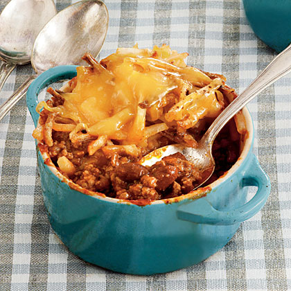

<<<<<<< HEAD

A Delicious cheesey chili supreme topped with heaping loads of cheese
Chili - A traditional comfort food, normally made with chili peppers, tomatoes and often pinto beans or kidney beans. Topped with shredded cheese to bring it all into a gooey delicious meal.
Ingredients
- 2 pounds lean ground beef
- 1 (46 fluid ounce) can tomato juice
- 1 (29 ounce)can tomato sauce
- 1 (15 ounce) can kidney beans, drained and rinsed
- 1 (15 ounce) can pinto beans, drained and rinsed
- 1½ cups chopped onion
- ¼ cup chopped green bell pepper
- ¼ cup chili powder
- 1½ teaspoons ground cumin
- 1 teaspoon salt
- ½ teaspoon white sugar
- ½ teaspoon dried oregano
- ½ teaspoon ground black pepper
- ⅛ ground cayenne pepper
=======
>>>>>>> 72951bdb0f2624a0846b25627eece460ecb0deea